Candidate List 20260804Last night — ZTF: 3,614 passed basic cuts (104 young) · LSST: 0 passed basic cuts (0 young)Previous Day Next Day
Section 1: New Sources (age<1d) Section 2: Old (1-5d) sources observed last nightplaceholder
Section 1: New Afterglow/FBOT Cands Last Night (6)
1. [ZTF] ZTF23aajpnri (Afterglow?) [Back to Top] [Share] [Trigger Swift] [Fritz Alert] [Fritz Source] [Lasair]RA, Dec: 276.35337, -6.27425 18h25m24.81s, -6d-16m-27.29sGalactic (l, b): 24.37387, 2.8893 ext(g-r) = 1.184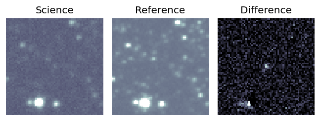
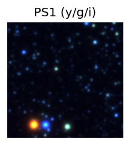

TESS: Sectors [ 80 118]
PS1: 1 source in 3 arcsec Closest: d = 2.51 arcsec photoz=0.37+/-0.09 peak abs mag = -24.64
LegacySurvey: 0 sources in 3 arcsec
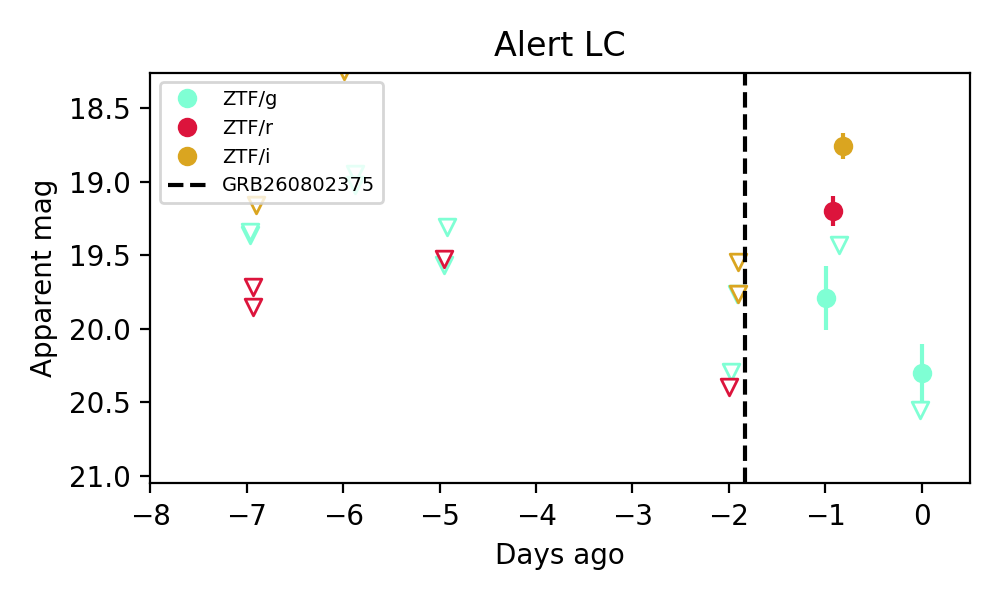
Extinction-corrected gr color:
From alerts: -0.59 +/- 0.24 mag
Extinction-corrected gi color:
From alerts: -0.79 +/- 0.23 mag
Extinction-corrected ri color:
From alerts: -0.2 +/- 0.13 mag
Rise Rate:
g: 0.52 mag/day
r: 1.1 mag/day
i: 0.93 mag/day
Fade Rate:
g: 0.78 mag/day
2. [ZTF] ZTF26abljqps (Afterglow?) [Back to Top] [Share] [Trigger Swift] [Fritz Alert] [Fritz Source] [Lasair]RA, Dec: 282.6902, -10.97754 18h50m45.65s, -10d-58m-39.16sGalactic (l, b): 23.06228, -4.83285 ext(g-r) = 0.479


TESS: Sectors [80 92]
PS1: 1 source in 3 arcsec Closest: d = 1.12 arcsec photoz=0.83+/-0.09 peak abs mag = -26.90
LegacySurvey: 0 sources in 3 arcsec

Extinction-corrected gr color:
From alerts: -0.39 +/- 0.09 mag
Rise Rate:
g: 2.27 mag/day
r: 2.09 mag/day
Fade Rate:
g: 0.27 mag/day
3. [ZTF] ZTF26abljtph (Afterglow?) [Back to Top] [Share] [Trigger Swift] [Fritz Alert] [Fritz Source] [Lasair]RA, Dec: 260.56736, 9.04313 17h22m16.17s, 9d 2m35.26sGalactic (l, b): 30.99316, 23.89567 ext(g-r) = 0.111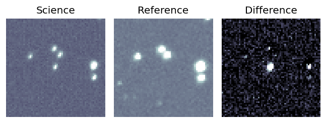
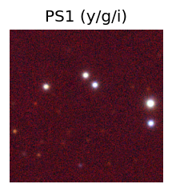
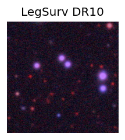
TESS: Sectors 118
PS1: 0 sources in 3 arcsec
LegacySurvey: 1 sources in 3 arcsec Closest: d = 7.48 arcsec, 147.6 deg (east of north) photoz=1.06 (68% bounds 0.57, 1.32), type=PSF peak abs mag = -26.51 (68% bounds -24.85, -27.11)
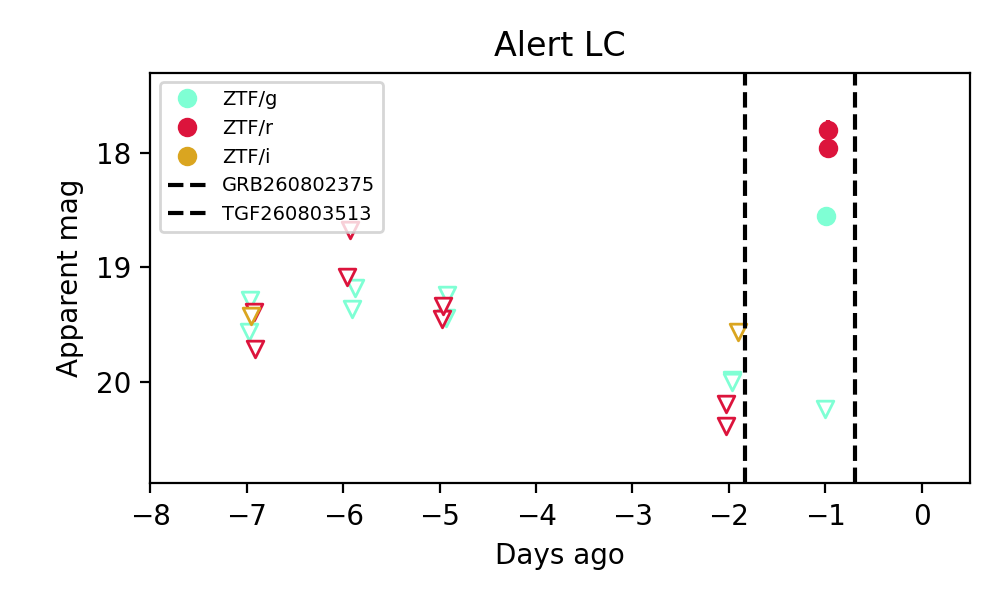
Extinction-corrected gr color:
From alerts: 0.53 +/- 0.09 mag
Consistent with synchrotron, g-r>0!
Rise Rate:
g: 1.48 mag/day
r: 2.45 mag/day
Fade Rate:
4. [ZTF] ZTF26abllowc (Afterglow?) [Back to Top] [Share] [Trigger Swift] [Fritz Alert] [Fritz Source] [Lasair]RA, Dec: 288.32905, -3.51079 19h13m18.97s, -3d-30m-38.84sGalactic (l, b): 32.2908, -6.46491 ext(g-r) = 0.66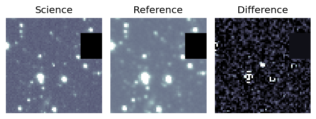
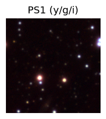

TESS: Sectors [54 80]
PS1: 1 source in 3 arcsec Closest: d = 0.74 arcsec photoz=0.74+/-0.02 peak abs mag = -25.74
LegacySurvey: 0 sources in 3 arcsec
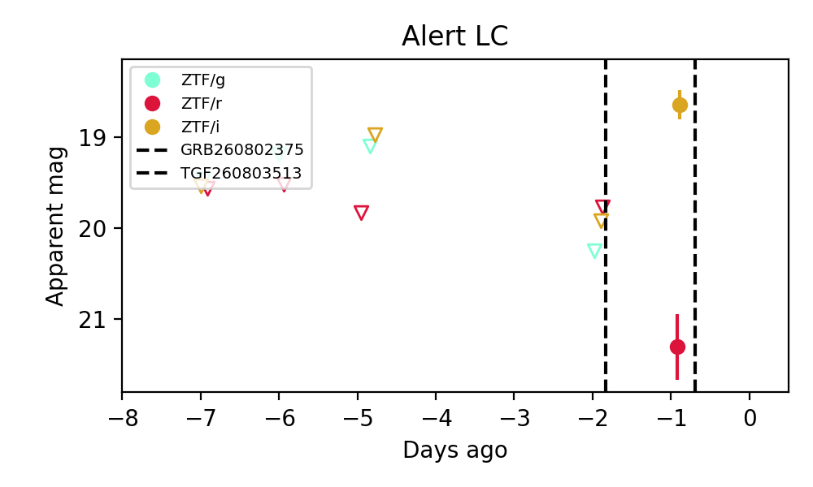
Extinction-corrected ri color:
From alerts: 2.3 +/- 0.4 mag
Consistent with synchrotron, g-r>0!
Rise Rate:
i: 1.26 mag/day
Fade Rate:
5. [ZTF] ZTF26ablmnns (Afterglow?FBOT?) [Back to Top] [Share] [Trigger Swift] [Fritz Alert] [Fritz Source] [Lasair]RA, Dec: 10.3882, 41.17011 0h41m33.17s, 41d10m12.39sGalactic (l, b): 120.93049, -21.66322 ext(g-r) = 0.359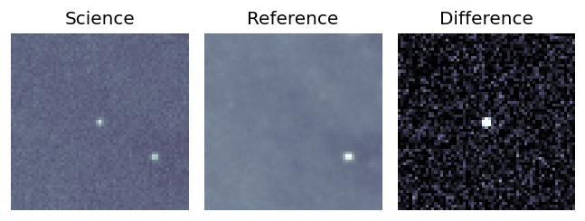
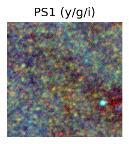

TESS: Sectors [17 57 84]
PS1: 1 source in 3 arcsec Closest: d = 0.56 arcsec photoz=0.51+/-0.06 peak abs mag = -25.02
LegacySurvey: 0 sources in 3 arcsec
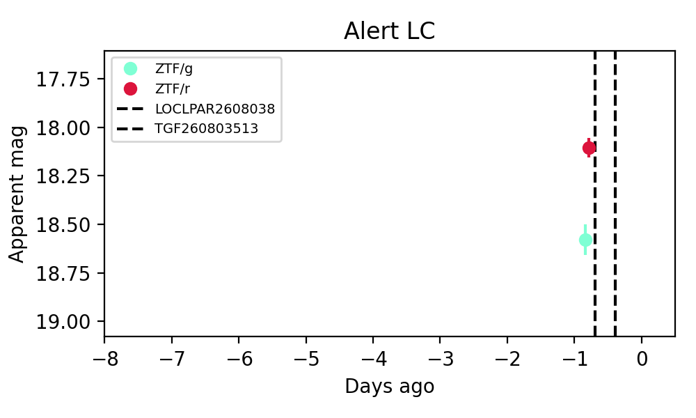
Extinction-corrected gr color:
From alerts: 0.12 +/- 0.09 mag
Consistent with synchrotron, g-r>0!
Rise Rate:
g: 0.27 mag/day
Fade Rate:
6. [ZTF] ZTF26ablmzpx (Afterglow?) [Back to Top] [Share] [Trigger Swift] [Fritz Alert] [Fritz Source] [Lasair]RA, Dec: 317.30005, 39.45845 21h 9m12.01s, 39d27m30.42sGalactic (l, b): 83.14891, -5.67184 ext(g-r) = 0.605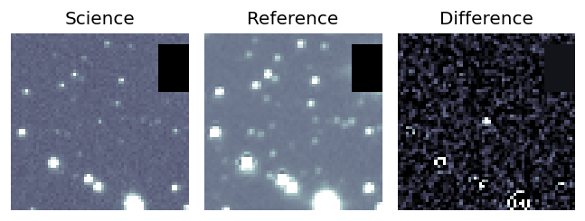
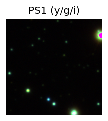

TESS: Sectors [ 15 55 56 75 76 82 83 121]
PS1: 1 source in 3 arcsec Closest: d = 7.38 arcsec photoz=0.62+/-0.09 peak abs mag = -24.21
LegacySurvey: 0 sources in 3 arcsec
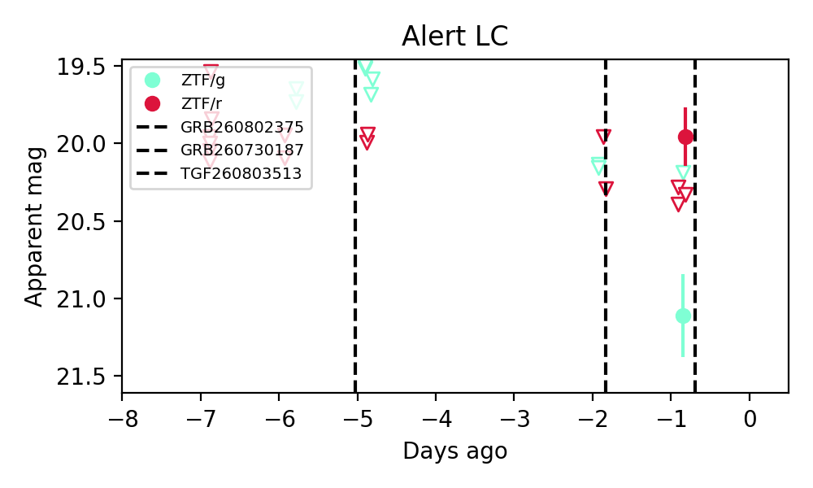
Extinction-corrected gr color:
From alerts: 0.55 +/- 0.33 mag
Consistent with synchrotron, g-r>0!
Rise Rate:
r: 4.63 mag/day
Fade Rate:
Section 2: Older Sources Observed Last Night (9)
0. [ZTF] ZTF22abfxgup (FBOT?) [Back to Top] [Share] [Trigger Swift] [Fritz Alert] [Fritz Source] [Lasair]RA, Dec: 285.39396, -3.44544 19h 1m34.55s, -3d-26m-43.58sGalactic (l, b): 31.01597, -3.8238 ext(g-r) = 0.965


TESS: Sectors 80
PS1: 1 source in 3 arcsec Closest: d = 0.20 arcsec photoz=0.40+/-0.06 peak abs mag = -24.20
LegacySurvey: 0 sources in 3 arcsec

Extinction-corrected gr color:
From alerts: -0.48 +/- 0.2 mag
Extinction-corrected gi color:
From alerts: -0.48 +/- 0.14 mag
Extinction-corrected ri color:
From alerts: -0.13 +/- 0.14 mag
Consistent with synchrotron, g-r>0!
Rise Rate:
g: 0.11 mag/day
r: 0.28 mag/day
i: 0.15 mag/day
Fade Rate:
1. [ZTF] ZTF26abkqcko (Afterglow?) [Back to Top] [Share] [Trigger Swift] [Fritz Alert] [Fritz Source] [Lasair]RA, Dec: 297.7608, 39.15655 19h51m2.59s, 39d 9m23.57sGalactic (l, b): 73.99735, 6.34182 ext(g-r) = 0.317


TESS: Sectors [ 14 15 54 55 74 75 81 82 119 120]
PS1: 0 sources in 3 arcsec
LegacySurvey: 0 sources in 3 arcsec

Extinction-corrected gr color:
From alerts: -0.45 +/- 0.13 mag
Rise Rate:
r: 0.28 mag/day
Fade Rate:
g: 0.12 mag/day
r: 0.29 mag/day
2. [ZTF] ZTF26abkwrrk (Afterglow?) [Back to Top] [Share] [Trigger Swift] [Fritz Alert] [Fritz Source] [Lasair]RA, Dec: 43.49442, 77.38258 2h53m58.66s, 77d22m57.29sGalactic (l, b): 129.58555, 16.12277 ext(g-r) = 0.259


TESS: Sectors [18 19 25 26 52 53 59 73 79 86]
SDSS (<15 kpc):Found SDSS phot-z: z=0.08; peak abs mag = -19.40
NED (10 arcsec):Found NED spec-z: z=0.09; peak abs mag = -19.82
PS1: 1 source in 3 arcsec Closest: d = 4.65 arcsec photoz=0.02+/-0.00 peak abs mag = -16.76
LegacySurvey: 0 sources in 3 arcsec

Extinction-corrected gr color:
From alerts: -0.39 +/- 99 mag
Rise Rate:
r: 0.04 mag/day
Fade Rate:
r: 0.54 mag/day
3. [ZTF] ZTF26abldxtk (FBOT?) [Back to Top] [Share] [Trigger Swift] [Fritz Alert] [Fritz Source] [Lasair]RA, Dec: 226.74727, 10.5778 15h 6m59.35s, 10d34m40.08sGalactic (l, b): 12.08469, 54.09173 ext(g-r) = 0.044

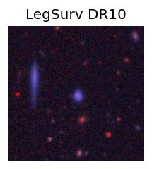
TESS: Sectors 51
SDSS (<15 kpc):Found SDSS phot-z: z=0.09; peak abs mag = -19.47
PS1: 0 sources in 3 arcsec
LegacySurvey: 1 sources in 3 arcsec Closest: d = 1.71 arcsec, 210.8 deg (east of north) photoz=0.13 (68% bounds 0.1, 0.14), type=SER peak abs mag = -20.11 (68% bounds -19.52, -20.43)

Extinction-corrected gr color:
From alerts: -0.41 +/- 0.17 mag
Extinction-corrected gi color:
From alerts: -0.89 +/- 0.27 mag
Extinction-corrected ri color:
From alerts: -0.48 +/- 0.29 mag
Rise Rate:
g: 0.24 mag/day
r: 0.09 mag/day
i: 0.03 mag/day
Fade Rate:
4. [ZTF] ZTF26ablengy (Afterglow?) [Back to Top] [Share] [Trigger Swift] [Fritz Alert] [Fritz Source] [Lasair]RA, Dec: 274.88566, 1.82835 18h19m32.56s, 1d49m42.05sGalactic (l, b): 30.91682, 7.92895 ext(g-r) = 0.906


TESS: Sectors [ 80 118]
PS1: 1 source in 3 arcsec Closest: d = 2.52 arcsec photoz=0.22+/-0.39 peak abs mag = -22.86
LegacySurvey: 0 sources in 3 arcsec

Extinction-corrected gr color:
From alerts: -0.35 +/- 0.2 mag
Extinction-corrected gi color:
From alerts: -0.71 +/- 0.24 mag
Extinction-corrected ri color:
From alerts: -0.36 +/- 0.22 mag
Rise Rate:
g: 0.06 mag/day
r: 0.17 mag/day
i: 0.17 mag/day
Fade Rate:
i: 0.37 mag/day
5. [ZTF] ZTF26ablevah (Afterglow?) [Back to Top] [Share] [Trigger Swift] [Fritz Alert] [Fritz Source] [Lasair]RA, Dec: 292.72675, -4.23224 19h30m54.42s, -4d-13m-56.07sGalactic (l, b): 33.64605, -10.70483 ext(g-r) = 0.606


TESS: Sectors [54 81]
PS1: 1 source in 3 arcsec Closest: d = 2.65 arcsec photoz=0.88+/-0.22 peak abs mag = -27.43
LegacySurvey: 0 sources in 3 arcsec

Extinction-corrected gr color:
From alerts: -0.23 +/- 0.12 mag
Extinction-corrected gi color:
From alerts: -0.59 +/- 0.12 mag
Extinction-corrected ri color:
From alerts: -0.36 +/- 0.1 mag
Rise Rate:
g: 0.27 mag/day
r: 0.67 mag/day
i: 0.37 mag/day
Fade Rate:
r: 0.45 mag/day
i: 0.21 mag/day
6. [ZTF] ZTF26abljnrw (Afterglow?) [Back to Top] [Share] [Trigger Swift] [Fritz Alert] [Fritz Source] [Lasair]RA, Dec: 232.85262, 4.1003 15h31m24.63s, 4d 6m1.09sGalactic (l, b): 8.97715, 45.45483 ext(g-r) = 0.049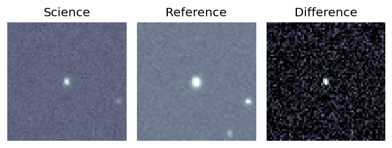
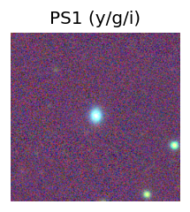
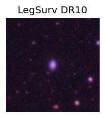
TESS: Sectors 51
NED (10 arcsec):Found NED spec-z: z=0.11; peak abs mag = -18.98
PS1: 0 sources in 3 arcsec
LegacySurvey: 1 sources in 3 arcsec Closest: d = 0.12 arcsec, 272.5 deg (east of north) photoz=0.1 (68% bounds 0.09, 0.11), type=SER peak abs mag = -18.55 (68% bounds -18.27, -18.83)
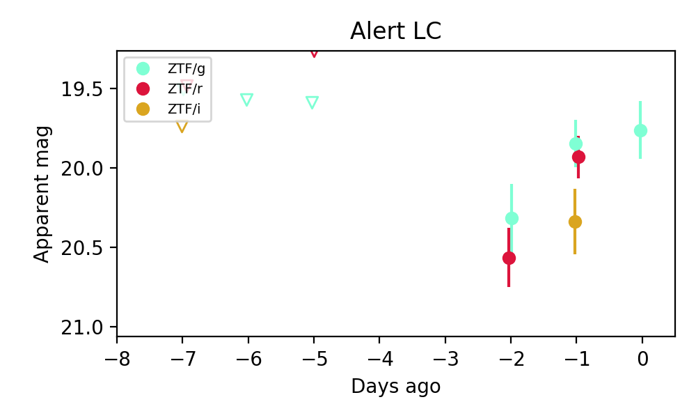
Extinction-corrected gr color:
From alerts: -0.13 +/- 0.2 mag
Extinction-corrected gi color:
From alerts: -0.57 +/- 0.26 mag
Extinction-corrected ri color:
From alerts: -0.43 +/- 0.25 mag
Consistent with synchrotron, g-r>0!
Rise Rate:
g: 0.04 mag/day
r: 0.6 mag/day
Fade Rate:
7. [ZTF] ZTF26abllnon (FBOT?) [Back to Top] [Share] [Trigger Swift] [Fritz Alert] [Fritz Source] [Lasair]RA, Dec: 293.11241, 4.08282 19h32m26.98s, 4d 4m58.15sGalactic (l, b): 41.2966, -7.21224 ext(g-r) = 0.367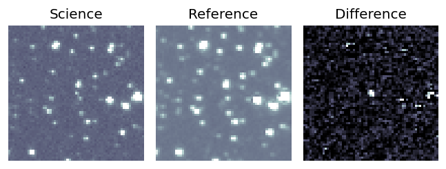
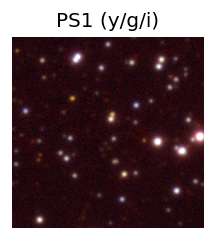

TESS: Sectors [54 81]
PS1: 1 source in 3 arcsec Closest: d = 2.91 arcsec photoz=0.13+/-0.82 peak abs mag = -20.59
LegacySurvey: 0 sources in 3 arcsec
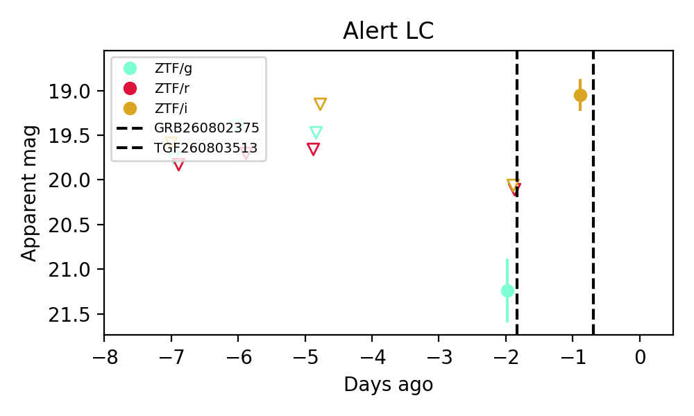
Extinction-corrected gr color:
From alerts: 0.77 +/- 99 mag
Extinction-corrected gi color:
From alerts: 0.61 +/- 99 mag
Rise Rate:
i: 1.0 mag/day
Fade Rate:
8. [ZTF] ZTF26ablolbu (FBOT?) [Back to Top] [Share] [Trigger Swift] [Fritz Alert] [Fritz Source] [Lasair]RA, Dec: 58.9891, 41.72833 3h55m57.38s, 41d43m41.98sGalactic (l, b): 155.94025, -9.02189 ext(g-r) = 0.722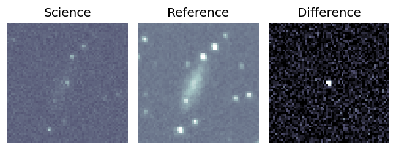
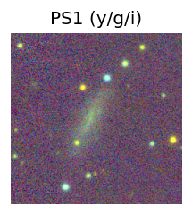

TESS: Sectors [19 59 86]
PS1: 1 source in 3 arcsec Closest: d = 2.45 arcsec photoz=0.12+/-0.06 peak abs mag = -20.80
LegacySurvey: 0 sources in 3 arcsec
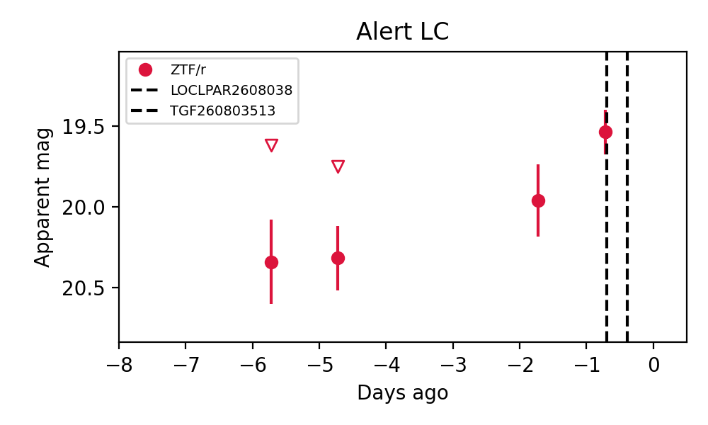
Rise Rate:
r: 0.2 mag/day
Fade Rate: